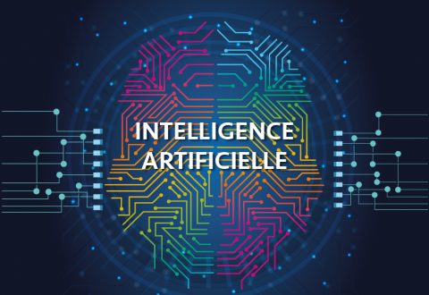

Intelligence Artificielle

Intelligence Artificielle
Historiquement, l'idée d'intelligence artificielle semble émerger dans les années 1950 quand Alan Turing se demande si une machine peut « penser ». Dans un article « Computing Machinery and Intelligence » (Mind, octobre 1950)8 Turing explore ce problème et propose une expérience (maintenant dite test de Turing)
Qui n’a jamais vu de films de science-fiction où des robots parlaient comme des humains, les aidaient à accomplir des tâches ménagères ou encore combattaient pour eux dans une guerre sans pitié ? Ce doux rêve, de recréer une intelligence, suscite la fascination et la crainte des chercheurs mais fait également couler beaucoup d’encre… Cependant depuis une soixantaine d'années, des hommes de science s’évertuent à rendre ce défi possible ! Créer une Intelligence Artificielle ! L'intelligence est l'ensemble des facultés mentales permettant de comprendre les choses et les faits, de découvrir les relations entre eux. L'intelligence est également admise comme étant la faculté d’adaptation. L’intelligence rationnelle et l’intelligence émotionnelle. Le terme artificiel se rapporte à tous ce qui n'est pas naturel et implique généralement que cela a été créé ou fabriqué par la main de l'homme. La question de l’importance accordée au principe de l’IA se pose alors. « L'intelligence artifi-cielle sera-t-elle le plus grand progrès de l'humanité ou son ultime invention ?
| IA | 2017 | 2018 | 2019 | 2020 |
| Business value | 692 | 1,175 | 1,901 | 2,949 |
| Growth (%) | 70 | 62 | 39 |
Le terme « intelligence artificielle », créé par John McCarthy, est souvent abrégé par le sigle « IA » (ou « AI » en anglais, pour Artificial Intelligence). Il est défini par l’un de ses créateurs,